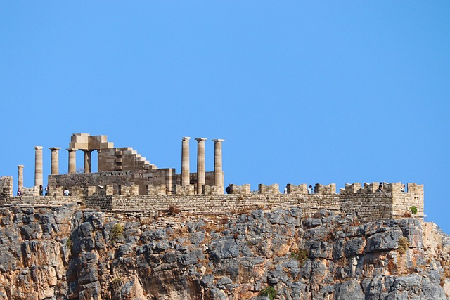

Cleobulus of Lindos was the tyrant of Lindos, an important port city
on the Greek island of Rhodes, in the 6th century BC. Unlike later
tyrants, however, he was not considered a dictator, but rather a
politician who was viewed positively by later generations.
Example of wise statesmanship
Cleobulus of Lindos's life and work reflect a time in which
political ideas, moral guidelines, and practical administration were
closely intertwined.

Lindos on Rhodes
Rhodes was an important political and economic hub in the Eastern
Mediterranean, known for trade, art, and political discourse.
For basic information, simply hover over the images.
For basic information, simply hover over the images.
Specific details about Cleobulus's education are scarce. He likely
received an education that encompassed jurisprudence, ethics, politics,
rhetoric, and morality – the ideals of a political teacher of
antiquity.
Typical of Cleobulus is the idea that he brought with him both theoretical
insight and administrative experience, which made him a suitable advisor
and legislator.
Cleobulus is one of the figures who embodies a clear orientation towards
the rule of law, order, and the common good. His teachings probably
emphasized justice, moderation, and the protection of civil rights within
a stable order.
Like other sage figures, Cleobulus is associated with the virtue of
moderation. He is said to have balanced the desire for power or luxury in
favor of a harmonious community.
As a wise state advisor, Cleobulus is said to have worked to stabilize the
community, promote public order, and support the economic well-being of
the citizens. His policies reflected the ideal that politics was a service
to the community, not an end in itself.
Cleobulus embodied the combination of theoretical knowledge and practical
government. His idea was that wisdom comes not only from writings, but
from concrete political decisions and administrative experience.
Cleobulus of Lindos is considered one of the Seven Sages because he is
seen in ancient traditions as a representative of practical wisdom and
governmental leadership. Like the other sages, Cleobulus is characterized
by a mixture of theoretical understanding and concrete administrative
experience. His thinking emphasized justice, order, and the protection of
the citizenry as the foundation of good governance. He saw politics as a
service to the community, not as an end in itself, and focused on
stability, harmony, and the welfare of citizens. He is credited with
speaking clearly and convincingly to provide guidance and legitimize
decisions.